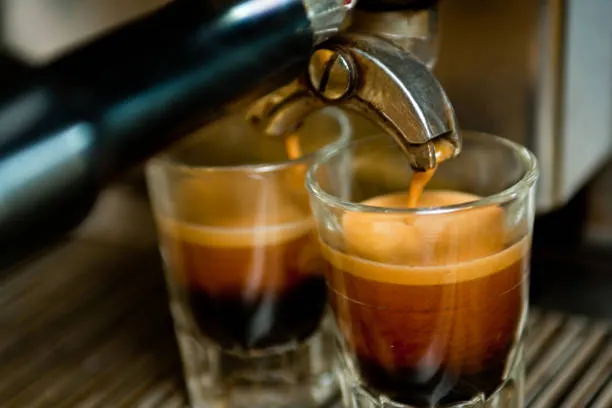
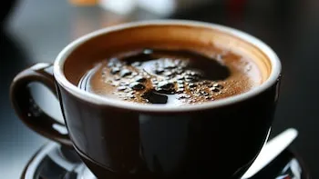
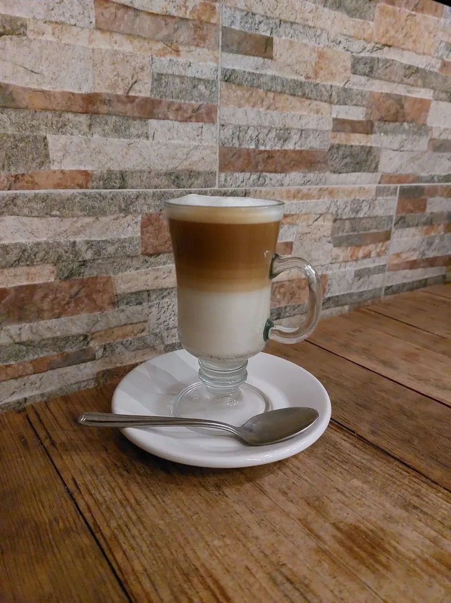

Tipos de Café
Arábica (Coffea Arabica)
El más consumido a nivel mundial. Tiene un sabor suave, aromático y con menor nivel de cafeína. Crece en altitudes elevadas y es ideal para cafés de especialida.
Ver PreparacionRobusta (Coffea Canephora)
Más amargo y con el doble de cafeína que el arábica. Su sabor es fuerte, con notas terrosas. Se usa comúnmente en cafés instantáneos o para dar fuerza a mezclas.
Ver PreparacionCafé Macchiato
El macchiato es un café espresso “manchado” con una pequeña cantidad de leche, generalmente espuma. Su nombre viene del italiano "macchiato", que significa "manchado"
Ver Preparacion